Member
4年生

Right00 【副サークル長】
主に3Dでゲームを作ってます。
GitHub

White_ash
バーチャルになりたい

ashin
ゲーム制作に関しては初心者に毛が生えた程度で恥ずかしい限りですが、楽しくやっています。注 :
アイコンの猫は野良猫であり、私は猫を飼ってはいません。
3年生

Kazuki Takeda 【サークル長】
Unity, Maya, Photoshop, UE4等が使えます。演出厨。
背景デザインが得意です。
Twitter
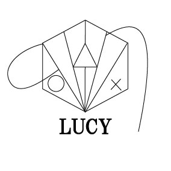
だんちょー
サークルのうるさい人担当です。unity入門中。YouTubeに動画投稿してます。ゲーム実況好きな人は是非！！
YouTube

OA
めっちゃデザイン頑張りたいひとです。ただ本当にできるすごい人のを見ると滅びてしまうひとです。ゲーム頑張ってつくります。
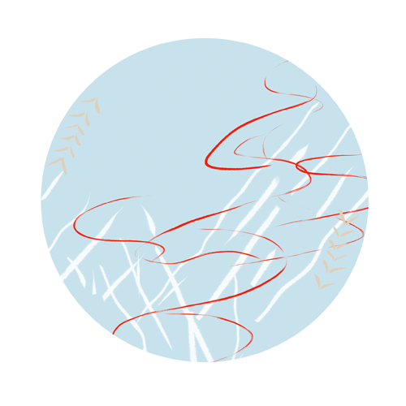
ゆ
絵を描きます。
Vtuberつくったりしてます。
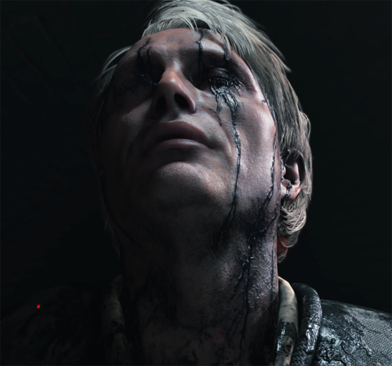
宇津木崇人 【書記】
Mayaを中心に勉強をしていて他は色の配色、描く練習をしています。時間があればUE4を勉強してmaya等使って一つゲーム作りたいです。
炸裂チキンヘッド
Mayaで3Dモデリングを勉強しています。いずれはCGのエフェクトとかにも手を出してみたいです。
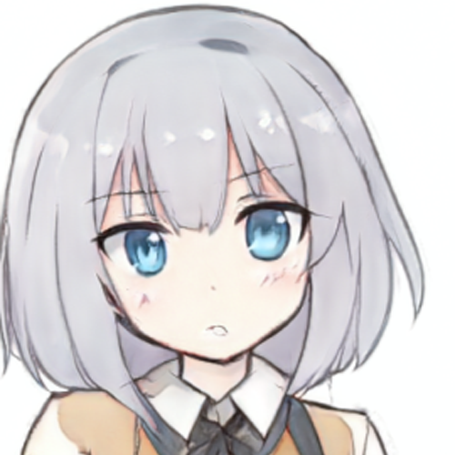
yuga
Unreal Engineで3Dゲームの製作に挑戦中です。
TSURU
絵やグラフィックがきれいなゲームを作りたい
2年生
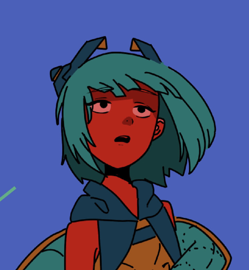
TOMMY 【会計】
ClipStudio, Photoshop, Illustlator, Mayaなどが使えます。2D,3D,キャラクターデザインから背景デザインまで、幅広く制作しています。
Twitter
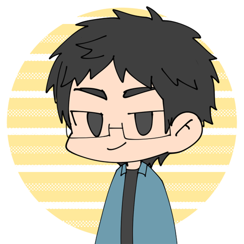
さとる
2DのアクションゲームやRPGの制作経験ありですが、これから3Dの作品も作っていきます！
1年生
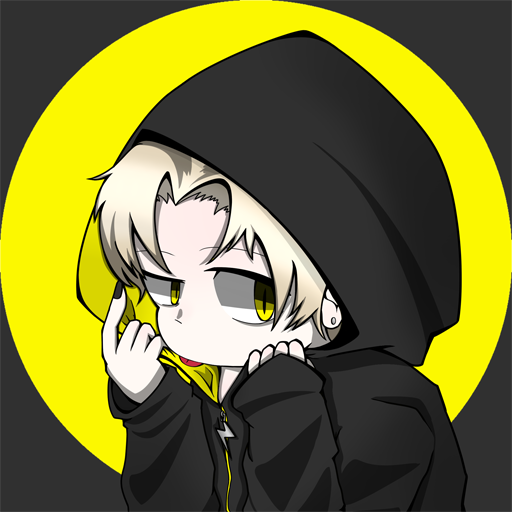
leotiga
ゲーム制作・Unity共に初心者ですが、キャラクターデザインやシナリオ作成などは経験があります。頑張って作っていきます！
うに
仮面ライダーとシンフォギア大好きマン。いつかゲームにかっこいい変身できるようにしたいです。
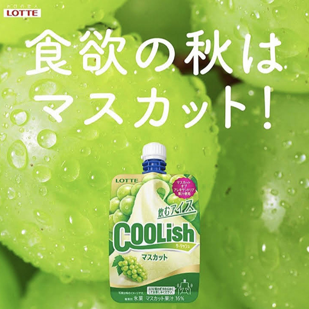
とき
switchのゲームとパズドラが好きです！
vチューバーもよく見ます
Syachi
ゲームをつくるのは初めてやりますが頑張っていきたいと思います！！
好きな食べ物はももで、好きなスポーツはテニスです。
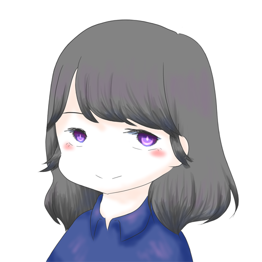
やまざき。
やまざきです。何にでも手を出します。ひらがなが好きです。ありったけの夢を詰め込んだみたいなゲーム作るのが目標です。
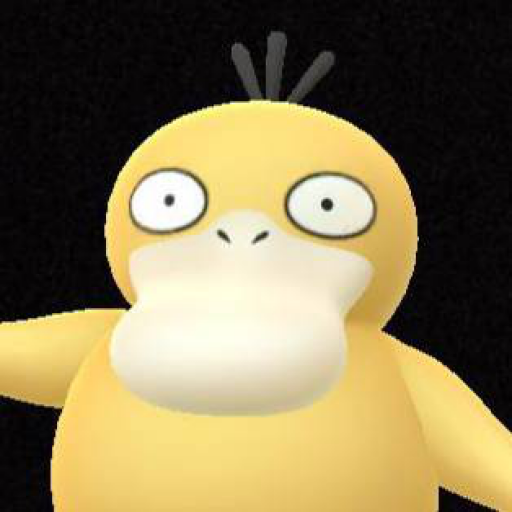
松永
茄子とパプリカとパクチーが嫌いです。がんばります。
卒業生
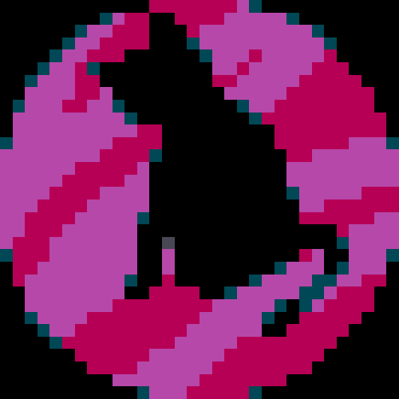
元ノラネコ
Unityとかでゲームっぽいの作るのが好きです。